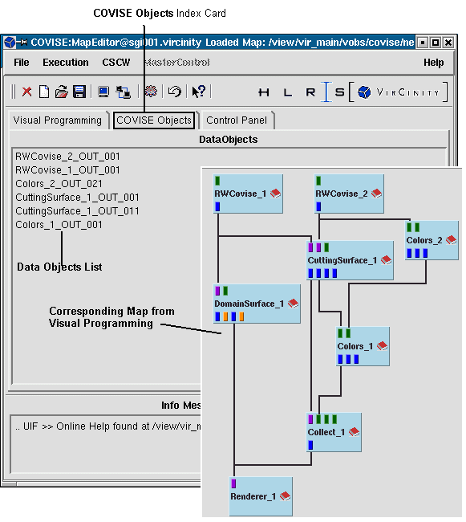
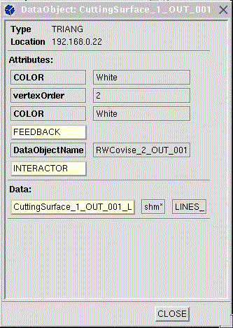

COVISE Objects are created when a map is
executed. The name of the data objects are generated generically, when
two ports are connected.
The names are shown in the COVISE Objects
index card (former DataObjects
selection list) in the MapEditor.
Note:
| You have to open COVISE Objects explicitly by clicking on the corresponding index entry in the MapEditor. |
|  |
| Map Editor - COVISE Objects index card (corresponding map added for explanation) |
To request information about data objects
| You must have executed your map before you get info about a data object, otherwise you get: not yet created, try execute! |
|  |
| Abbreviation | Data Object type | Description |
| UNIGRID
RCTGRD STRGRD |
DO_UniformGrid
DO_RectilinearGrid DO_StructuredGrid |
Structured grid types |
| UNSGRD | DO_UnstructuredGrid | Unstructured grid types |
| STRSDT
STRVDT |
DO_Structured_S3D_Data
DO_Structured_V3D_Data |
Structured data types |
| USTSDT
USTVDT |
DO_Unstructured_S3D_Data
DO_Unstructured_V3D_Data |
Unstructured data types |
| RGBADT | DO_RGBA_Data | Color values |
| SETELE | DO_Set | Container type for grouping of data objects |
| GEOMET | DO_Geometry | Renderer geometry container data type |
| POINTS
LINES TRIANG POLYGN VOLUMES |
DO_Points
DO_Lines DO_TriangleStrips DO_Polygons DO_Volumes |
Geometry data types |